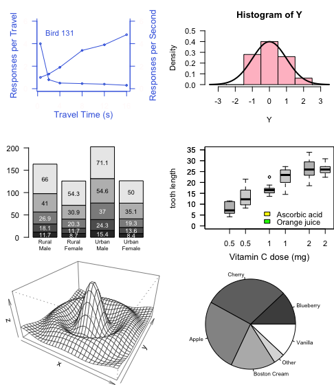
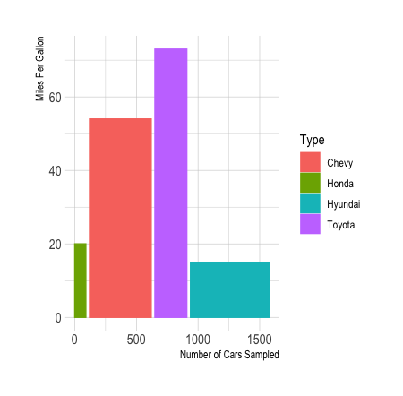

Assignments
Assignment 1


Assignment 2

What is pct?
character that will be plotted in the graph.
Cex value? -size of label that will appear.
EX)Seq (0,16,4)= 0 to 16 with 4 intervals
library(tidyverse)
library(ggplot2)
library(dplyr)
data <- data.frame(
Type=c(“Honda”,“Chevy”,“Toyota”,“Hyundai”) ,
MPG=c(20,54,73,15) ,
obs=c(90,500,259,642)
)
data\(right <- cumsum(data\)obs) + 30*c(0:(nrow(data)-1))
data\(left <- data\)right - data$obs
ggplot(data, aes(ymin = 0)) +
geom_rect(aes(xmin = left, xmax = right, ymax = MPG, colour = Type, fill = Type)) +
xlab(“Number of Cars Sampled”) +
ylab(“Miles Per Gallon”) +
theme_ipsum()

library(tidyverse)
library(ggplot2)
library(dplyr)
gg_np <- ggplot(data = mpg, aes(x = drv, y = hwy, group = class, col=drv))
gg_np +
geom_col(show.legend = FALSE) +
theme_gray() +
labs(x = “Type of Drive Train”, y = “Highway Miles per Gallon”) +
facet_wrap(~ class)

for these two graph, the colors are consistent within these two two charts, which it does not make single chart or graph to be outstanding than others. We all contributed on teams meetings and Lesile had put everything together.
EPPS 6302 Project Proposal